MSU's Translation Center which is a recently founded program that offer high-quality and affordable translation and interpreting services in over 20 languages across the MSU community and beyond. The Center can provide training, administer language proficiency exams, and develop workshops or classes in specialized topics in a variety of languages. So when I was brought on board my job was to Improve usablity, appeal, and increase foot traffic.
4 weeks (Analyse and Research: 1 week, Wire Frame & Prototype: 1 week, Develop & Accessibility 1 week, Release & Usability Testing: 1 week)
UX Design, UX Research, interaction & Visual Design, Copywriting


The goal was to allow users of different backgrounds in need of translation for important documents or events to h ave an accessible, user friendly, and visually appealing website.


Develop a research based site that enables neccissary translations
Desing responsive site that is accessible to many different backgrounds
I was the sole researcher, designer and media assistant for the translation center revamp
As of Fall 2023 I am still on board in implementing these changes
High-level objectives were to:
The major limitations ulitimatly stripped down to do it in a reasonable amount of time with the resources I have
Personal Experience
I only have a background in 2 foreign languages so designing around 20+ was something I had to work around
Timeframe
During this project I still am a full time student so I was challeneged to work around my busy schedule to work on this design
Data Knowledge
The current structure lacked user data so the need of surveying was necissary
About Page
Home Page
FAQ Page
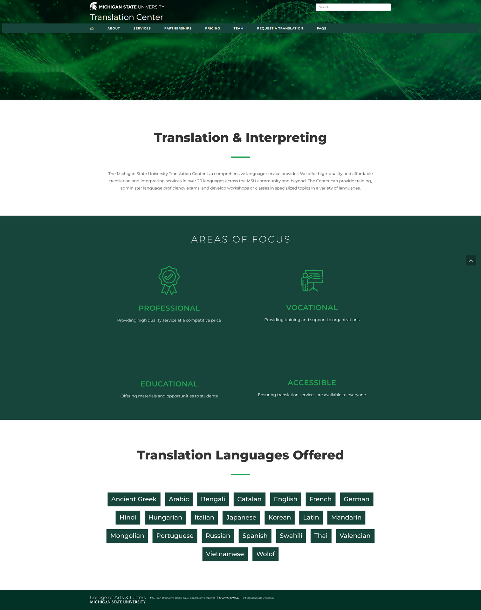 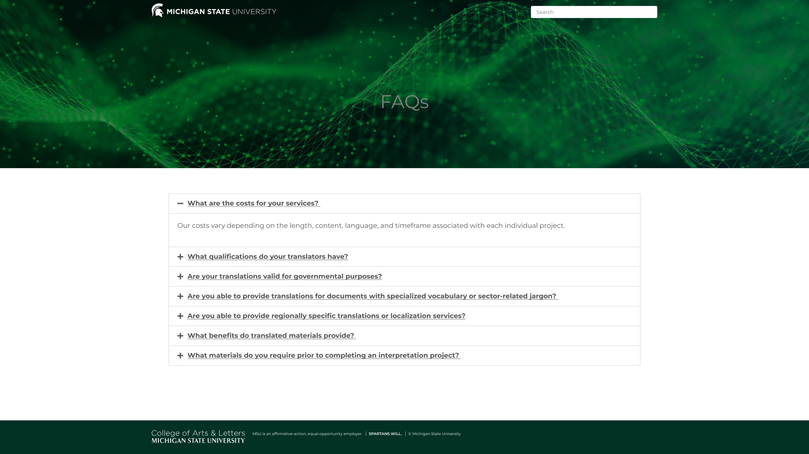 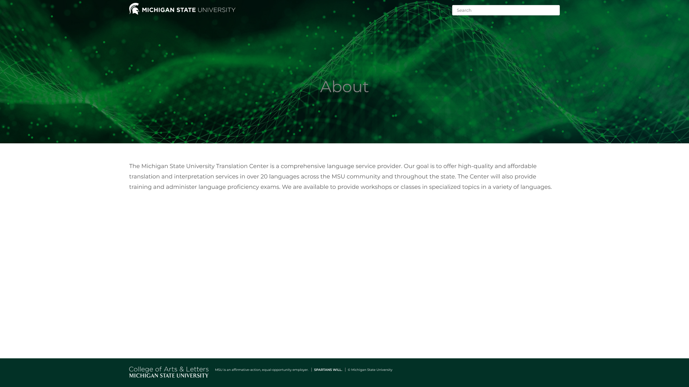Request a Translation Page
Pricing Page
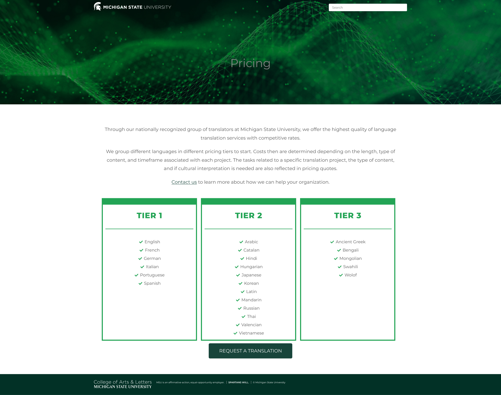 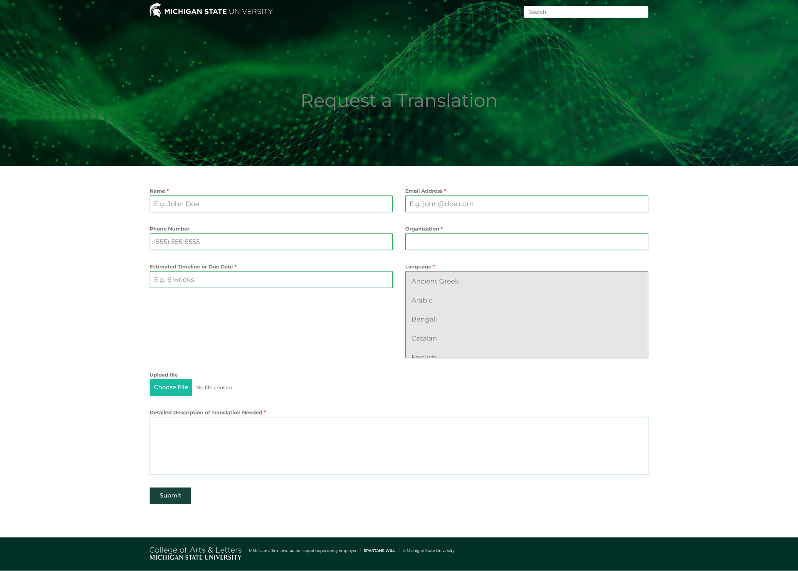Partners Page
Services Page
Out Team Page
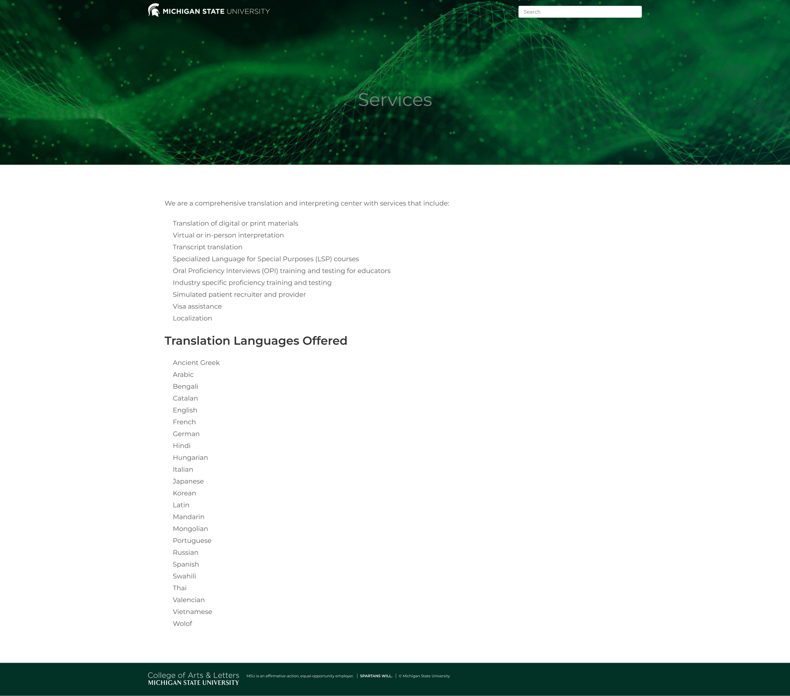 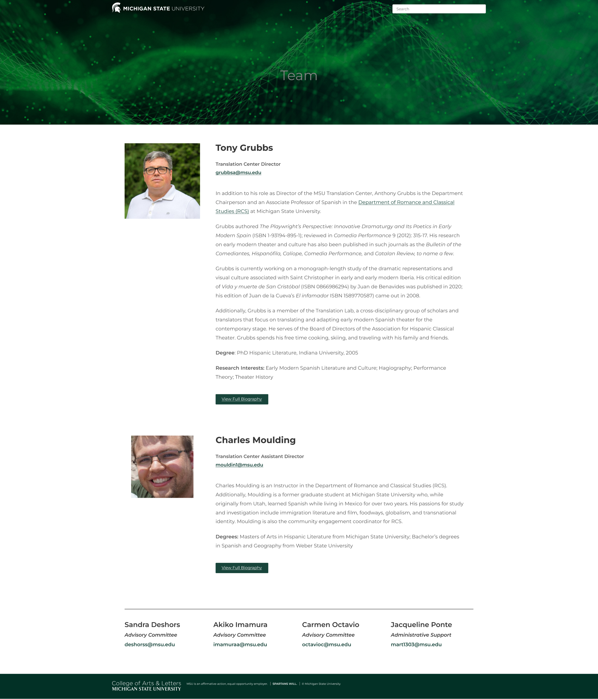One obvious takeaway was lack of accessibility of a multilingual website. This was highlighted in my managers' concerns and later echoed in initial user testing
To create a design consistant with the expectations of the websites target audience, I analyzed websites assicaited with Michigan State University that would match the audience

To make sure I had included all the features they needed, I showed my clients a site map and asked for their feedback before I started designing.
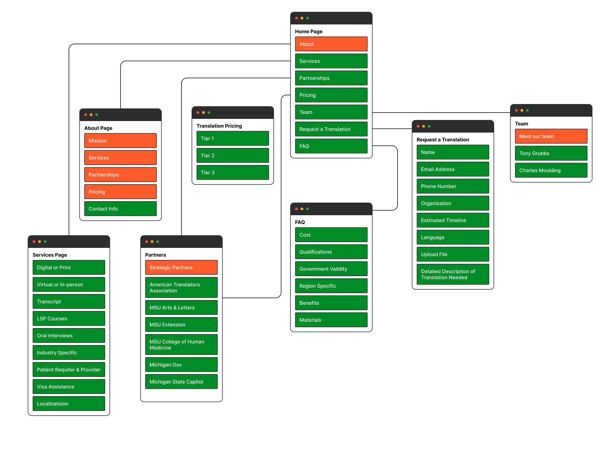Based off of research and meetings with managers, i currated wireframes with the curent goal in mind:
Reproducibility


Prioritize Accessibility
Ease of Use
Create simple layouts based off the infastructure of Wordpress
Dealing with many languages this sites need to be accessible
With having many people with different backgrounds access this site it
To ensure the accuracy of my final deliverable and to identify any potential constraints before delivery, I created and tested my high-quality designs in WordPress.
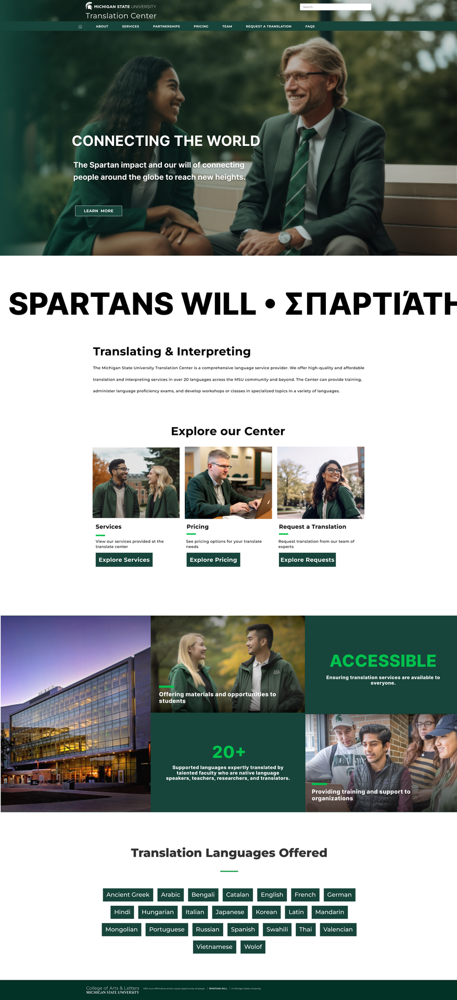 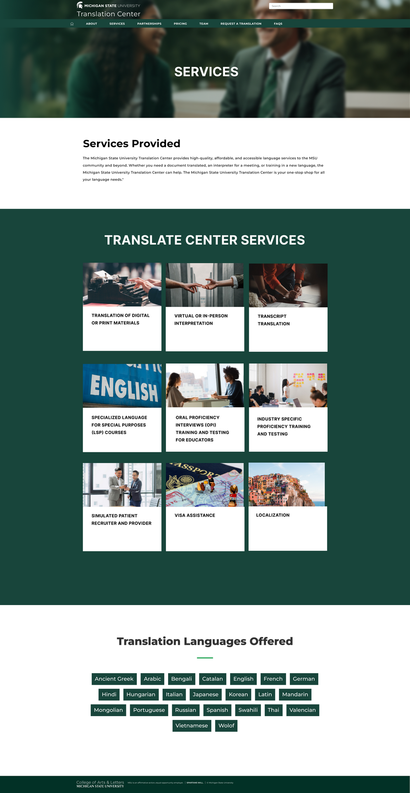A process-oriented approach to design
To ensure access to all languages there is a setting that will translate the entire site to the preffered language. All internal sites have had propper translation and is able to reach a vast demographic.
more user-friendly and effective. The navigation is simpler, the text is easier to read, and the contrast is improved. I have also used higher quality images throughout the site. For example, the homepage now features a simpler banner image with the text moved below the image. I have also divided the homepage into sections to make it easier for users to find the information they are looking for.
To ensure access to all languages there is a setting that will translate the entire site to the preffered language. All
I conducted 5 usablity tests to determine wheter my design allowed for successful and efficient completion of each task flow

Participants
Desktop
Translations

Testing to make sure translations are accurate for multi-lingual ussage
Participants included 4 people whos second language is english and 1 linguist
The desktop version of the website was tested because students will use computers at school to access it.
Solutions to the three above issues are explored below.

4/5 users were able to complete this task successfully
Made services clickable to bring your to translation requests

Made services clickable to bring your to translation requests
4/5 users found the transparency more helpful
 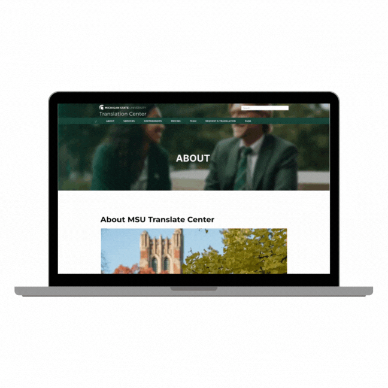
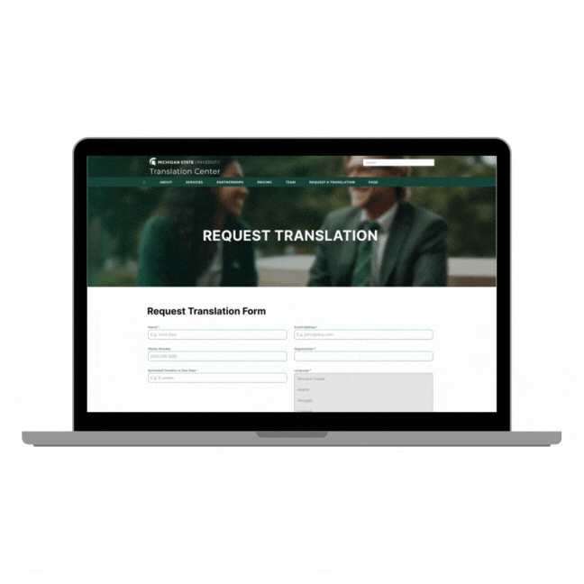
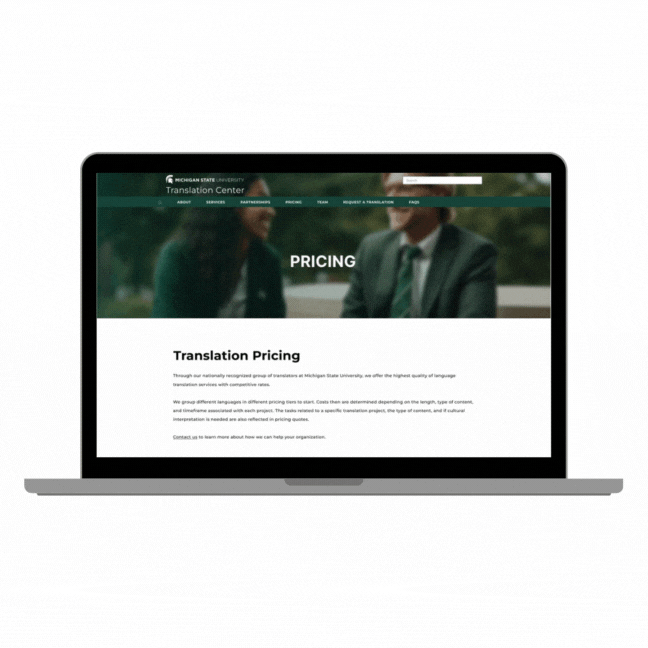
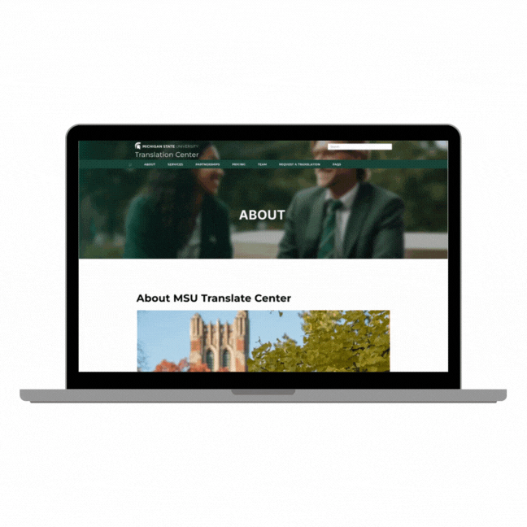
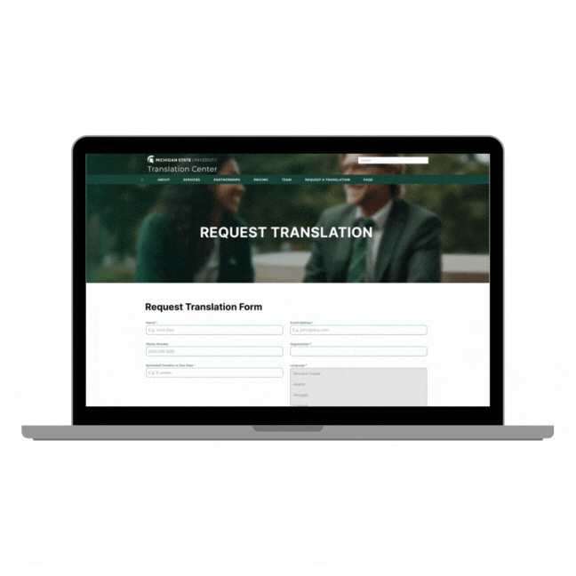
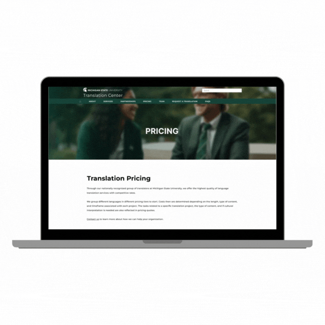
I got to learn so much from this experience with MSU's Translation Center. I believe this has been extreamly valuable as I was able to think about designing for multiple languages in mind. I would like to thank my manager Tony Grubbs for giving me so much trust in my first real experience in user designs.
As of now I am still with the MSU Translation Center so any updates or changes will go through me to implement. Also, I am in charge the the center's LinkedIn page so I continuously update that and expand their network to bring in users who are in need of their services.